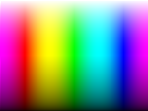
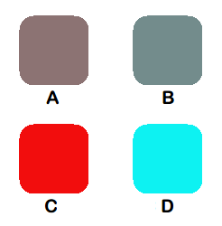
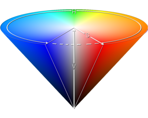
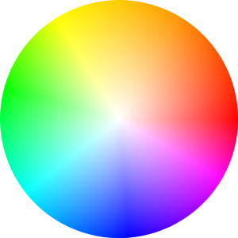
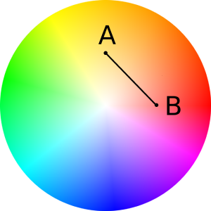
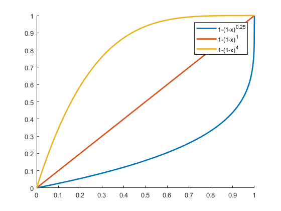

基本思想
- 将RGB色彩空间转化为HSV色彩空间
- 对HSV立方体色彩空间进行变换
- 度量色彩距离
- 对于在阈值范围内的色彩赋予标签
- 若该色彩在所有备选颜色的阈值范围外，则拒绝识别

色彩空间RGB转HSV
通过调用rgb2hsv函数来实现转换。
输入参数r、g和b范围均在01，输出参数h范围0360，输出参数s和v范围在0~1
/* RGB转HSV */
/* 0~1, 0~1, 0~1 -> 0~360, 0~1, 0~1 */
void rgb2hsv(float r, float g, float b, float& h, float& s, float& v)
{
float max_val = MAX3(r, g, b), min_val = MIN3(r, g, b);
float diff = max_val - min_val;
// 计算H
if (max_val == min_val)
h = 0;
else if (max_val == r)
{
if (g >= b)
h = 60 * ((g - b) / diff) + 0;
else
h = 60 * ((g - b) / diff) + 360;
}
else if (max_val == g)
{
h = 60 * ((b - r) / diff) + 120;
}
else if (max_val == b)
{
h = 60 * ((r - g) / diff) + 240;
}
// 计算S
if (max_val == 0)
s = 0;
else
s = (diff / max_val);
// 计算V
v = max_val;
}HSV色彩空间变换
HSV立方体色彩空间
传统的HSV立方体色彩空间并不能很好地度量颜色的相似程度。
举个例子，考虑四种颜色。（假定h、s和v范围均在0~1）
颜色A为
h=0, s=0.1, v=0.5，颜色B为h=0.5, s=0.1, v=0.5采用
L2距离度量，颜色A到B的距离为0.5颜色C为
h=0, s=0.9, v=0.5，颜色D为h=0.5, s=0.9, v=0.5采用
L2距离度量，颜色C到D的距离仍为0.5

这两个距离居然相同！这显然是不符合直觉的。我们直觉上应当认为A到B的距离应该小于C到D的距离，因为C和D两者色彩差异更大，而A和B都近似是某种灰色。
在实践应用上，我们感兴趣的往往不是灰度，而是某一种鲜艳的颜色。而且灰度颜色受光照的影响比较大，难以用于实践。
造成这种度量不均衡的原因是单纯在HSV立方体色彩空间中颜色的分布是不均衡的。如下图，我们发现灰度占据了绝大多数的空间，造成灰度对色彩距离度量的影响比较大。
所以我们要做的就是减少灰度对颜色距离度量的影响，突出不同色相的差异性。
接下来我们将其变换到HSV圆盘色彩空间，以突出不同色相区别。
HSV圆盘色彩空间
我们将HSV立方体色彩空间变换到锥体中。

考虑到色彩距离应该具备光照不变性，我们丢弃掉V轴，仅保留H和S分量构成的圆盘结构。

我们在圆盘中度量点A、B的距离便得到颜色相似度的度量值。

度量颜色距离
在HSV圆盘色彩空间中，我们可以采用直线距离度量方式，也可以采用弧线形的距离度量方式。
为简便起见，我们采用直线型的距离度量。
为了更好的调节色彩识别的鲁棒性因素，我们引入调节参数COLOR_ROBUST，用于调节色彩饱和度的鲁棒性。该参数值越大，则将会具有更大的允许饱和度变化的范围；该参数越小，则对饱和度变化允许的范围越小。
其中参数COLOR_ROBUST的实现是通过调节半径s的缩放来实现的。我们在半径s方向上对其进行套用函数：
$$
{1-(1-x)^n}
$$
其中n就是COLOR_ROBUST参数。

计算颜色距离的代码如下：
/* 计算颜色距离(输入范围均在0~1) */
float getColorDistance(float h, float s, float h_dst, float s_dst)
{
float x_src, y_src;
float x_dst, y_dst;
x_src = (1 - powf(1 - s, COLOR_ROBUST)) * cos(h * 2 * CV_PI);
y_src = (1 - powf(1 - s, COLOR_ROBUST)) * sin(h * 2 * CV_PI);
x_dst = (1 - powf(1 - s_dst, COLOR_ROBUST)) * cos(h_dst * 2 * CV_PI);
y_dst = (1 - powf(1 - s_dst, COLOR_ROBUST)) * sin(h_dst * 2 * CV_PI);
return sqrt(pow(x_src - x_dst, 2) + pow(y_src - y_dst, 2));
}颜色距离阈值
阈值计算原理
由于颜色是任意指定的，如果选取固定的距离阈值将不能广泛适应实际情况。我们在这里应该采取一种自动的方式来计算这个阈值。
标准颜色类似于聚类中心，我们把它抽象为颜色空间中的一个点，两两之间的距离抽象为线段。那么这个阈值可以用下图的方式计算。

这个阈值就是上图中各个圆的半径。原则是圆的半径从小到大依次选取。
一开始选取最小的半径必定是由最短的边决定的，半径为最短边的一半。如上图的圆A。
第二个圆是与第一个相邻的圆，半径等于第一个圆的半径，如上图的圆B。
然后就从剩余的可选择半径中选取半径较小的，即圆C。
最后选取圆D。
实现代码
如下的initColorInfo函数实现了颜色信息的初始化功能。
调用该函数后，二维数组color_table存储了各个标准颜色的HSV值，数组color_range_table存储了颜色阈值信息。
COLOR_NUM是颜色数量，在此例子中#define COLOR_NUM 6color_table的定义：float color_table[COLOR_NUM][3]color_range_table的定义：float color_range_table[COLOR_NUM]
/* 初始化颜色信息 */
void initColorInfo()
{
float h_dst, s_dst, v_dst;
for (int i = 0; i < COLOR_NUM; ++i)
{
// RGB空间
switch (i)
{
case 0: // Unknown(White)
color_table[i][0] = 255;
color_table[i][1] = 255;
color_table[i][2] = 255;
break;
case 1: // Red
color_table[i][0] = 148;
color_table[i][1] = 19;
color_table[i][2] = 24;
break;
case 2: // Orange
color_table[i][0] = 198;
color_table[i][1] = 115;
color_table[i][2] = 35;
break;
case 3: // Yellow
color_table[i][0] = 177;
color_table[i][1] = 152;
color_table[i][2] = 23;
break;
case 4: // Green
color_table[i][0] = 45;
color_table[i][1] = 93;
color_table[i][2] = 19;
break;
case 5: // Blue
color_table[i][0] = 39;
color_table[i][1] = 92;
color_table[i][2] = 132;
break;
}
// 转化为HSV空间
rgb2hsv(color_table[i][0] / 255.0, color_table[i][1] / 255.0, color_table[i][2] / 255.0, h_dst, s_dst, v_dst);
color_table[i][0] = h_dst / 360.0f;
color_table[i][1] = s_dst;
color_table[i][2] = v_dst;
}
// 计算可识别的颜色距离
float dist;
float min_dist;
float adjMat[COLOR_NUM][COLOR_NUM]; // 邻接矩阵(非对称)
bool activeNode[COLOR_NUM];
// 初始化邻接矩阵
for (int i = 0; i < COLOR_NUM; ++i)
{
for (int j = i + 1; j < COLOR_NUM; ++j)
{
dist = getColorDistance(color_table[i][0], color_table[i][1], color_table[j][0], color_table[j][1]);
adjMat[i][j] = dist;
}
}
// 初始化activeNode
for (int i = 0; i < COLOR_NUM; ++i) activeNode[i] = true;
// 初始化color_range_table
for (int i = 0; i < COLOR_NUM; ++i) color_range_table[i] = 0;
// 计算距离
while (1)
{
// 求出最短距离
min_dist = 1e9;
for (int i = 0; i < COLOR_NUM; ++i)
{
for (int j = i + 1; j < COLOR_NUM; ++j)
{
dist = adjMat[i][j];
if ((activeNode[i] == false) ^ (activeNode[j] == false)) dist *= 2;
if (dist>1e-6 && dist < min_dist)
{
min_dist = dist;
}
}
}
// 一起减去最短距离
for (int i = 0; i < COLOR_NUM; ++i)
{
for (int j = i + 1; j < COLOR_NUM; ++j)
{
if (adjMat[i][j] > 1e-6)
{
if ((activeNode[i] == false) ^ (activeNode[j] == false)) adjMat[i][j] -= min_dist / 2;
else adjMat[i][j] -= min_dist;
}
}
}
// 更新color_range_table
for (int i = 0; i < COLOR_NUM; ++i)
{
if (activeNode[i] == true)
{
color_range_table[i] += min_dist / 2;
}
}
// 更新有效结点
for (int i = 0; i < COLOR_NUM; ++i)
{
for (int j = i + 1; j < COLOR_NUM; ++j)
{
if (adjMat[i][j] < 1e-6)
{
activeNode[i] = false;
activeNode[j] = false;
}
}
}
// 退出条件
int activeNodeNum = 0;
for (int i = 0; i < COLOR_NUM; ++i)
{
activeNodeNum += int(activeNode[i]);
}
if (activeNodeNum == 0) break;
}
}颜色识别
当距离小于阈值时则判定为该颜色。如果都不符合，则拒绝识别。
代码中使用参数
COLOR_RANGE_A来控制颜色的容限，值越接近1代表颜色的可变化性越大，值越接近0代表容不得颜色变化过大。ColorType是颜色的枚举类型数组
/* 从HSV识别颜色 */
/* H = 0~360, S = 0~1, V = 0~1 */
ColorType hsvColorReg(float h, float s, float v)
{
float dist;
h /= 360.0f;
for (int i = 0; i < COLOR_NUM; ++i)
{
dist = getColorDistance(h, s, color_table[i][0], color_table[i][1]);
if (dist <= COLOR_RANGE_A * color_range_table[i])
{
return ColorType(i);
}
}
return Unknown;
}